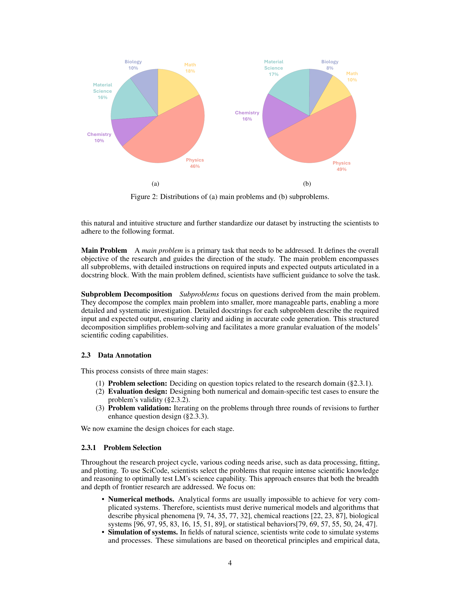
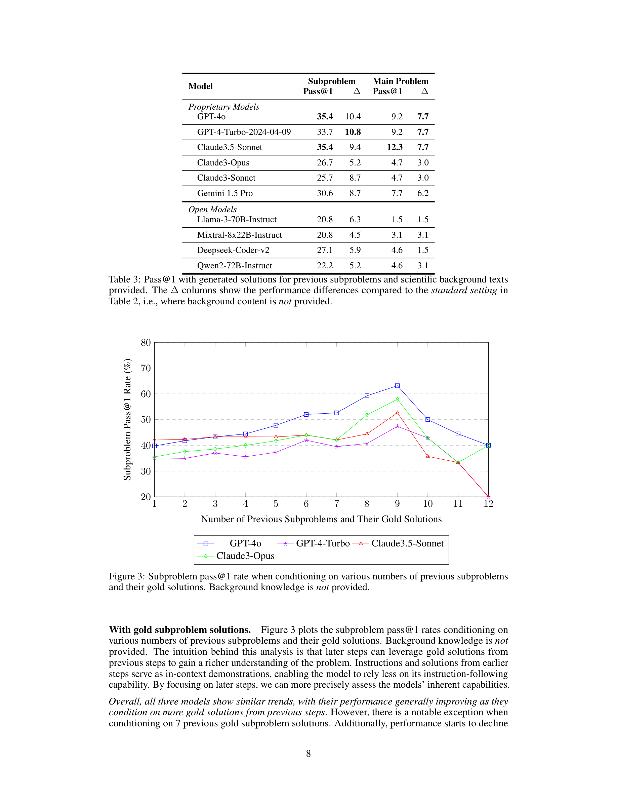
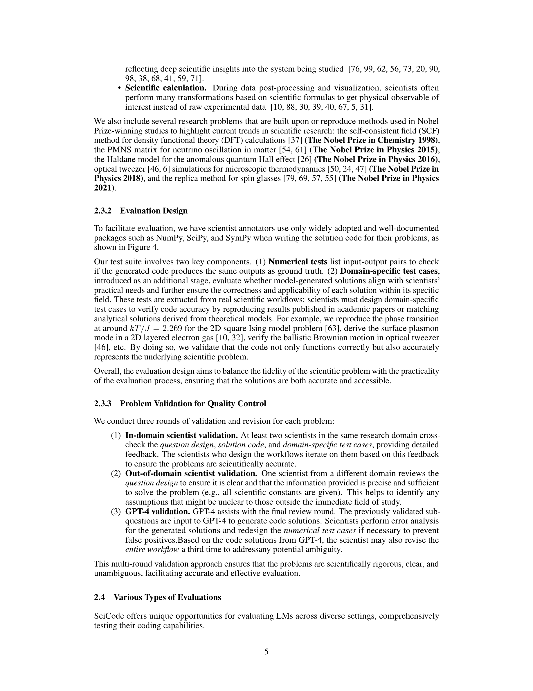

메타 정보
- 저자: Minyang Tian, Luyu Gao, Shizhuo Dylan Zhang 외 다수
- 출판: arXiv preprint, 2024
- DOI: 10.48550/arXiv.2407.13168

Figure 1

Figure 2
Figure 1

Figure 2
자연과학 분야(수학, 물리, 화학, 생물, 재료과학)의 실제 연구 코딩 문제를 과학자들이 직접 큐레이션한 벤치마크 SciCode를 제안한다. 80개 주요 문제(main problem)가 338개 하위 문제(subproblem)로 분해되며, 각 문제는 과학적 배경지식 회상, 추론, 코드 합성을 동시에 요구한다. 가장 현실적인 평가 설정에서 최고 성능 모델 Claude3.5-Sonnet이 주요 문제의 4.6%만 해결할 수 있어, 현재 LM의 과학 코딩 능력의 한계를 명확히 보여준다.

Figure 3
기존 코딩 벤치마크(HumanEval, MBPP 등)가 LM 성능 향상에 따라 포화되고 있으며, 합성적으로 난이도를 높인 벤치마크는 실세계 응용과의 괴리가 있다. 한편 과학 연구에서 코드 개발은 핵심 활동이지만, 과학자들의 내부 코드는 거의 공개되지 않아 LM 훈련 데이터에 노출이 적다. 이러한 데이터 오염 방지와 실세계 과학 연구 적용성을 동시에 확보할 수 있는 도전적 벤치마크가 필요했다.

Figure 4
| 항목 | 점수 (1-10) | 비고 |
|---|---|---|
| 참신성 (Novelty) | 9 | 과학자 큐레이션 + 다단계 분해의 과학 코딩 벤치마크는 최초 |
| 기술적 완성도 (Soundness) | 8 | 3라운드 검증 프로세스, 다만 통계적 규모가 다소 작음 |
| 유의미성 (Significance) | 9 | AI for Science의 핵심 격차를 정량적으로 드러냄 |
| 재현성 (Reproducibility) | 8 | 코드/데이터 공개, 다만 과학자 검증 프로세스 자체의 재현은 어려움 |
| 종합 (Overall) | 9 | LM의 과학 연구 보조 능력을 평가하는 가장 현실적인 벤치마크 |